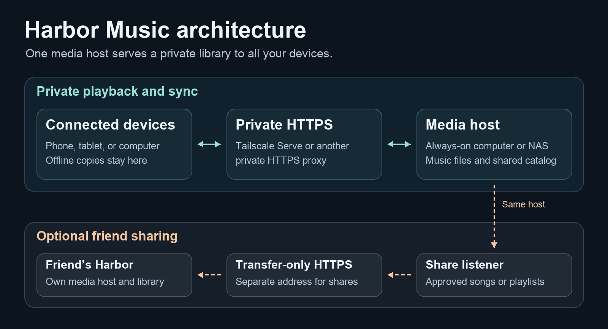

Cancel the subscription.
Keep the music.
Bring your own music files. Harbor Music turns them into a private streaming library you can listen to at home, on the road, or offline.
Open source under the MIT License. Host on Mac, Linux, or a compatible NAS.
Listen across your devices
Use Harbor on iPhone, iPad, Android, and desktop browsers. Add it to your phone’s Home Screen or build the optional Mac app.
- One library, synced listening
- Favorites, synced playlists, and the last track and position follow you between paired devices. Harbor can retry an interrupted stream from the saved spot. Device-only playlists stay on the device that made them.
- Downloads that follow your lists
- Choose Favorites or playlists to keep offline. Harbor saves songs as they’re added and clears automatic copies when no selected list needs them.
- Play the whole selection
- Browse by artist, album, or genre and sort alphabetically. Play in order or shuffle the full playlist, album, or filtered view as you scroll.
- Share a song or playlist privately
- Optional friend sharing sends a copy to another Harbor installation. You approve the recipient, and the offer closes after one verified import.
How it fits together
One media host serves your library. Your listening devices connect to it over a private network.

- Media host
- Python runs the server on an always-on computer or compatible NAS. SQLite stores the catalog and shared state. FFmpeg can read tags through ffprobe.
- Private connection
- Tailscale Serve gives paired devices a private HTTPS address. Another private HTTPS reverse proxy can serve the same role.
- Connected devices
- The web player streams supported files directly. Each device stores its own downloads and device-only playlists.
Set up your library
Start with an always-on Mac or Linux computer, Git, Python 3.11 or newer, and a folder of audio files such as MP3, M4A, or WAV. A compatible NAS can also be your media host.
-
Start Harbor on the media host
Run these commands in Terminal and choose your music folder when asked. Open the local player address printed by the setup command to confirm your tracks appear.
git clone https://github.com/bobofbuilding/harbor-music.git cd harbor-music ./setup-harbor -
Give your devices a private address
Install Tailscale on the host and each listening device and join the same private network. Run this on the host and append
/music/to the HTTPS address Tailscale prints. Keep the owner player local to the host.tailscale serve --bg http://127.0.0.1:8765 -
Pair each device
On the host, open Devices to get a one-time code. Open your private Harbor address on the device and enter the code. Generate a new code for each device.
On iPhone or iPad, add Harbor to the Home Screen from Safari before pairing if you plan to use it there. Keep the media host awake and Harbor running for streaming away from home.
Before you switch
Where does the music come from?
Harbor plays audio files you provide. Streaming-service catalogs, subscriptions, and in-app downloads aren’t imported. Start with files from your own collection, such as purchased downloads or a CD collection you’ve digitized.
Can I listen when the host is off?
Previously downloaded tracks can play offline on the device that saved them. Streaming, new downloads, and syncing resume when your host is reachable again.
Do I need a NAS or a Mac app?
An always-on Mac or Linux computer with local storage works as a media host. Use a browser on your listening devices. The optional Mac app connects to the same library.
Can a friend use a separate Tailscale network?
Yes. Optional friend sharing uses a separate transfer address for approved Harbor installations. Your private player stays on your own network. See the sharing setup.